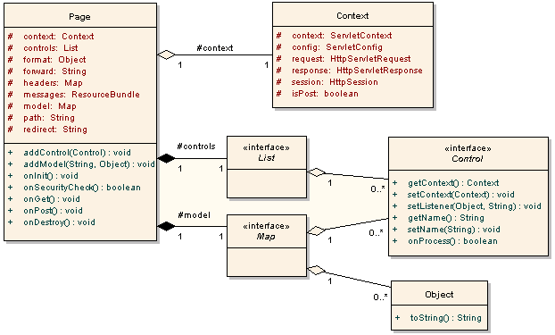
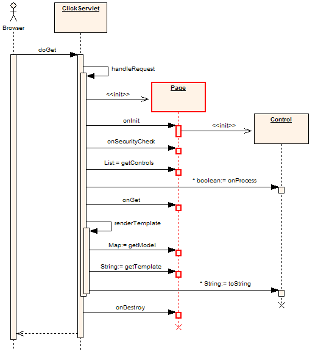
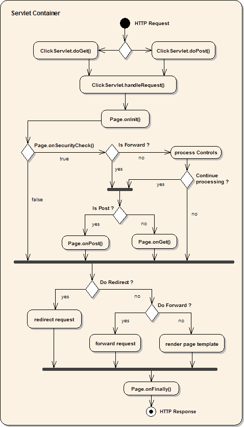

Pages
Pages are the heart of web applications. In Click, Pages encapsulate the processing of
HTML requests and the rendering of HTML responses. The section discusses Click pages
and covers to following topics:
In Click, a logical page is composed of a Java class and a Velocity template, with these
components being defined in page elements of the
click.xml file.
<page path="search.htm" classname="com.mycorp.page.Search"/>
The path attribute specifies the location of the page Velocity template, and the classname
attribute specifies the page Java class name.
Classes
All custom Click pages must subclass the
Page base class.
The Page class and its associated companion classes, Context and Control, are depicted
below in Figure 1.

Figure 1. Page Class Diagram
The Page class provides a model attribute which is used to hold all the objects that
are rendered in the page's Velocity template. The model may also contain
Control objects, which
provide user interface controls on the Page.
Pages also have an associated
Context object
which references all the javax.servlet objects associated with the request. When
programming in Click you use the Context object to access HttpServletRequest attributes,
parameters and the HttpSession object.
The Page class provide a number of empty handler methods which subclasses can override to
provide functionality:
- onInit()
- onSecurityCheck()
- onGet()
- onPost()
- onFinally()
The ClickServlet relies on instantiating Pages using a public no arguments constructor,
so when you create Page subclasses you must ensure you don't add an incompatible
constructur. By convention in Click you place initialization code in an onInit()
method and you generally don't implement a constructor.
Execution
The GET request execution sequence for Pages is summarised below in the Figure 2.

Figure 2. GET Request Sequence Diagram
Stepping through this GET request sequence, a new Page instance is created and the
attributes for the Page are set (context, format, headers, path). Next the onInit()
method is invoked. This is where you typically place your initialization code.
The next method invoked is the onSecurityCheck() handler. This method can used to
ensure the user is authorized to access the page, and if necessary can abort any
further processing.
The next step is the processing of the Page's controls. The ClickSerlvet gets the list of
Controls from the page and then iterates through the list calling onProcess().
If any of the Control's onProcess() methods return false, processing of
subsequent controls and the Page's onGet() method is aborted.
If everything is executing normally the Page's onGet() method is now called.
The next step is rendering the page template to generate the displayed HTML. The
ClickServlet gets the model from the Page as well as the path to its template. It then
merges the template with the page model and writes out results to the HttpServletResponse.
When the model is being merged with the template, any Controls in the model may be
rendered using their toString() method.
The final step in this sequence is invoking the Page's onFinally() method. This
method can be used to clean up resource associated with the Page before it is garbage
collected. The onFinally() method is garanteed to be called even if an exception
occurs in the previous steps.
The execution sequence for POST requests is almost identical, except the onPost()
method is invoked instead on onGet(). See the
POST Request Sequence Diagram.
Another view on the execution flow of Pages is illustrated in the Activity diagram below.

Figure 3. Page Execution Activity Diagram
Navigation
Navigation between pages is achieved by using forwards, redirects and by setting the
page template path.
Forward
To forward to another page using the servlet
RequestDispatcher
set the Page's forward property. For example to forward to a page with a path
"index.htm":
public void onPost() {
// Process form post
..
setForward("index.htm");
}
This will invoke a new Page class instance mapped to the path
"index.htm". Note when a request is forwarded to another Page,
the controls on the second page will not be processed. This prevents confusion and bugs,
like a form on the second page trying to process a POST request from the first page.
Forward Parameter Passing
When you forward to another page the request parameters are maintained. This is a handy way
of passing through state information through with the request. For example to you could
add a customer object as request parameter which is displayed in the template of the
forwarded page.
public boolean onViewClick() {
Long id = viewLink.getValueLong();
Customer customer = CustomerDatabase.getCustomer(id);
getContext().setRequestAttribute("customer", customer);
setForward("view-customer.htm");
return false;
}
Forwarded to page template "view-customer.htm":
<html>
<head>
<title>Customer Details</title>
</head>
<body>
<h1>Customer Details</h1>
<pre>
Full Name: $customer.fullName
Email: $customer.email
Telephone: $customer.telephone
</pre>
</body>
</html>
Request attributes are automatically added to the Velocity Context object so are
available in the page template.
Template Path
An alternative to forwarding to a new page is to simply set the path to the new
page template to render. With this approach the page template being rendered must have
everything it needs without having its associated Page object being created. Our modified
example would be:
public boolean onViewClick() {
Long id = viewLink.getValueLong();
Customer customer = CustomerDatabase.getCustomer(id);
addModel("customer", customer);
setPath("view-customer.htm");
return false;
}
Note how the customer object is passed through to the template in the Page model. This
approach of using the Page model is not available when you forward to another Page, as
the first Page object is "finalized" before the second Page object is created and any
model values would be lost.
Redirect
Redirects are another very useful way to navigate between pages. See
HttpServletResponse.sendRedirect(location)
for details.
The great thing about redirects are that they provide a clean URL in the users browser
which matches the page that they are viewing. This is important for when users want to
bookmark a page. The downside of redirects are that they involve a communications round
trip with the users browser which requests the new page. Not only does this take time,
it also means that all the page and request information is lost.
An example of a redirect to a "logout.htm"
page is provided below:
public boolean onLogoutClick() {
setRedirect("logout.htm");
return false;
}
Redirect Parameter Passing
You can pass information between redirected pages using URL request parameters.
The ClickServlet will encode the URL for you using
HttpServletResponse.encodeRedirectURL(url)
method.
In the example below a user will click on an OK button to confirm a payment. The
onOkClick() button handler processes the payment, gets the payment transaction id, and then
redirects to the "trans-complete.htm" page with the
transaction id encoded in the URL.
public class Payment extends Page {
..
public boolean onOkClick() {
if (form.isValid()) {
// Process payment
..
// Get transaction id
Long id = ..
setRedirect("trans-complete.htm?trans-id=" + id);
return false;
}
return true;
}
..
}
The Page class for the "trans-complete.htm" page can
then get the transaction id through the request parameter
"trans-id":
public class TransComplete extends Page {
..
public void onInit() {
String id = getContext().getRequest().getParameter("trans-id");
if (id != null) {
// Get transaction details
..
}
}
..
}
Post Redirect
The parameter passing example above is also an example of a Post Redirect. The Post
Redirect technique is a very useful method of preventing users from submitting a form
twice by hitting the refresh button.
Security
Pages provide an
onSecurityCheck
event handler which application pages override to implement authentication or
authorization capabilities.
Application Authentication
Applications can use this method to implement their own security model. The example
class below provides a base Secure page class which other pages can extend
to ensure the user is logged in. In this example the login page adds a "user" object to
the session when a user successfully authenticates. This Secure page then checks to make sure
this session attribute is present, otherwise the request is redirected back to the login
page.
public class Secure extends Page {
public boolean onSecurityCheck() {
if (getContext().getSessionAttribute("user") != null) {
return true;
} else {
setRedirect("login.htm");
return false;
}
}
}
Container Authentication
Alternatively you can also use the security services provided by the J2EE Servlet
Container. For instance to ensure users have been authenticated by the Serlvet Container
you could use a Secure page of:
public class Secure extends Page {
public boolean onSecurityCheck() {
if (getContext().getRequest().
getRemoteUser() != null) {
return true;
} else {
setRedirect("login.htm");
return false;
}
}
}
Container Access Control
The Servlet Container also provides facilities to enforce role based access control
(authorization). The example below is a base page to ensure only users
in the "admin" role can access the page, otherwise users are redirected to the login page.
Application Admin pages would extend this secure page to provide their funcationality.
public class AdminPage extends Page {
public boolean onSecurityCheck() {
if (getContext().getRequest().
isUserInRole("admin")) {
return true;
} else {
setRedirect("login.htm?");
return false;
}
}
}
Logging Out
To logout using the application or container based security models you would simply
invalidate the session.
public class Logout extends Page {
public boolean onInit() {
getContext().getSession().
invalidate();
}
}
Error Handling
If an Exception occurs processing a Page object or rendering a page template the error
is delegated to the registered error.htm
TODO:
Page Not Found
If the ClickServlet cannot find a requested page in the click.xml config file
it will use the registered "not-found.htm" page. The Click not found page is automatically configured as:
<page path="click/not-found.htm" classname="net.sf.click.Page"/>
You can override the default configuration and specify your own class, but you cannot change the path.
When the ClickSevlet starts up it checks to see whether the not-found.htm template exists in the
click web sub directory. If it cannot find the page the ClickServlet will automatically deploy one.
You can tailor the "click/not-found.htm" template to suite you own needs. This page template
has access to the usual Click parameters:
- $context
- $format
- $request
- $response
- $session